اختر حتى ثلاثة مشاهد وصوّر منتجك فيها بموافقة واحدة، من الاستوديو الأبيض والرخام والطبيعة إلى مشاهد الاستخدام اليومي. ثم اختر أفضل نتيجة.
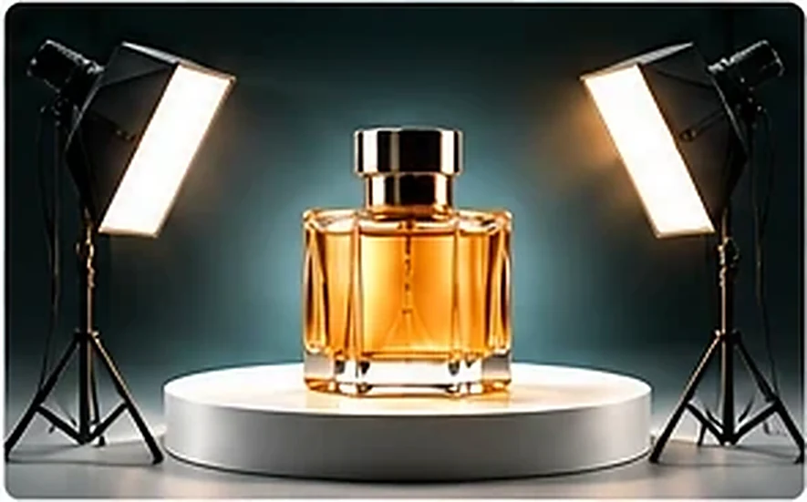
صور توضيحية لأنواع المشاهد التي يمكن طلبها.
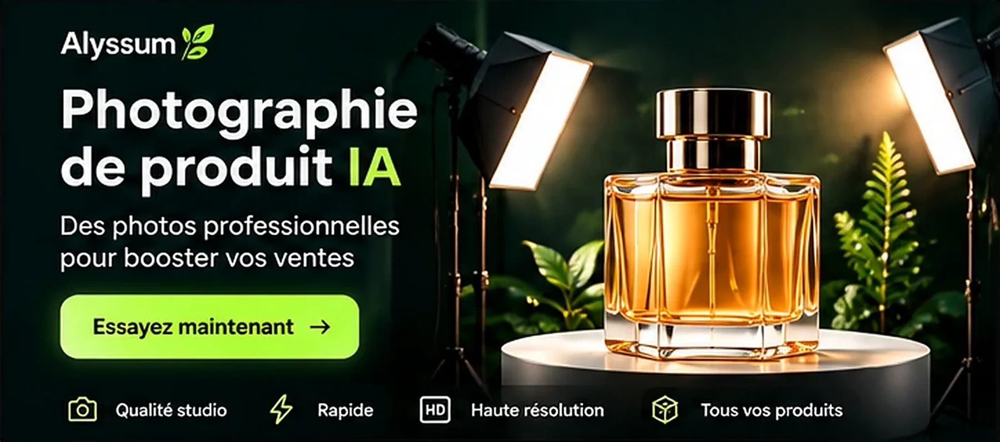
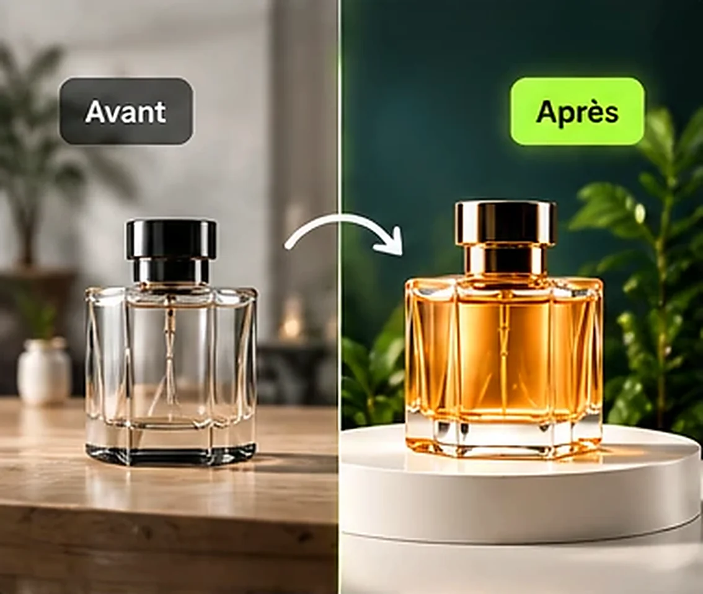
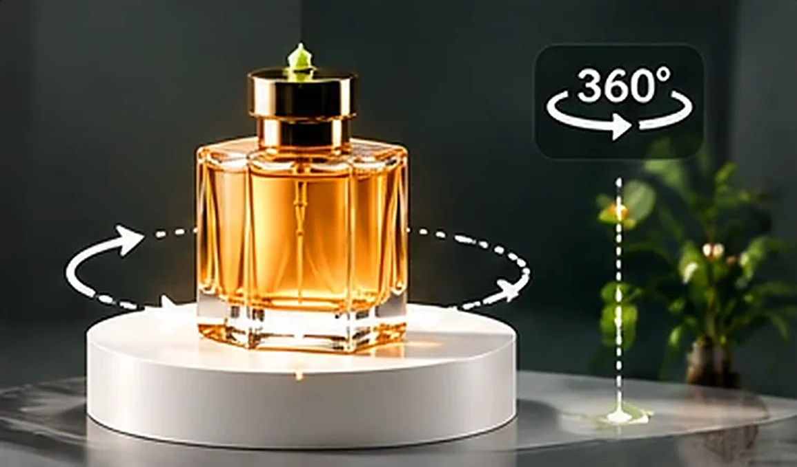
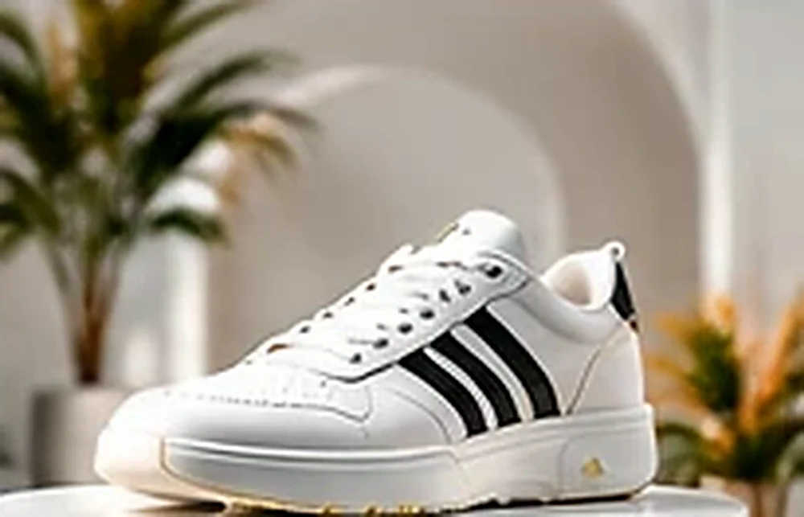
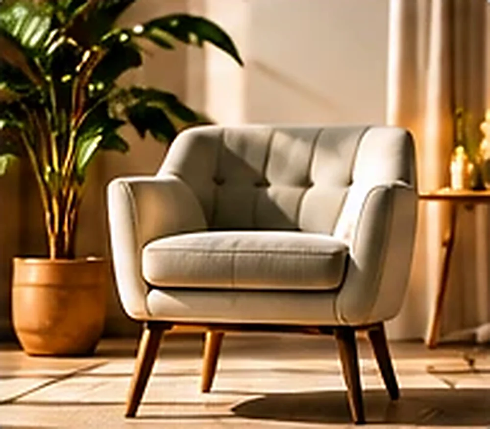
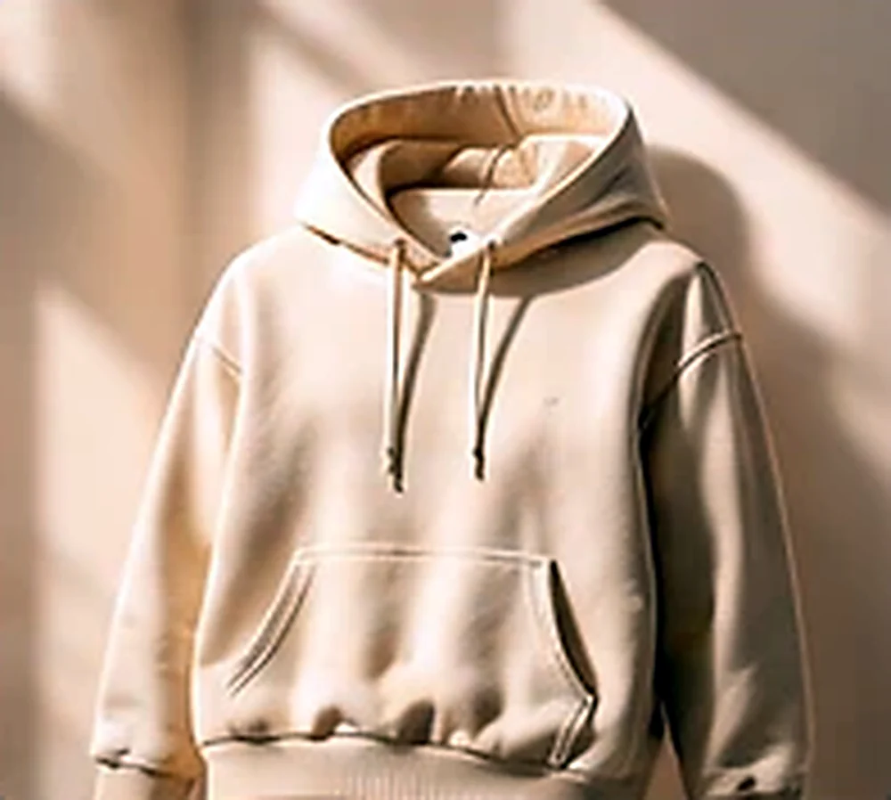
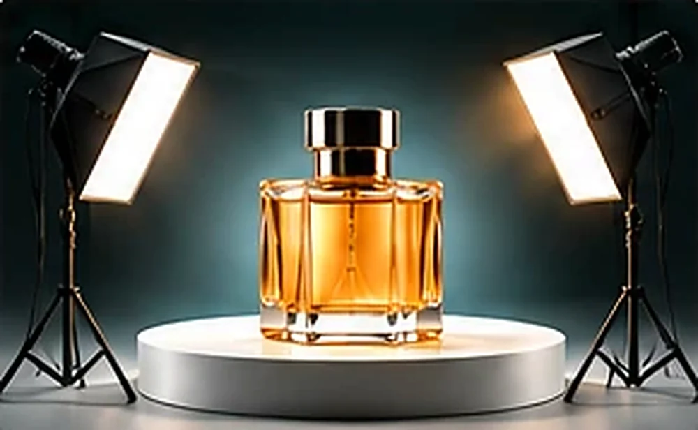
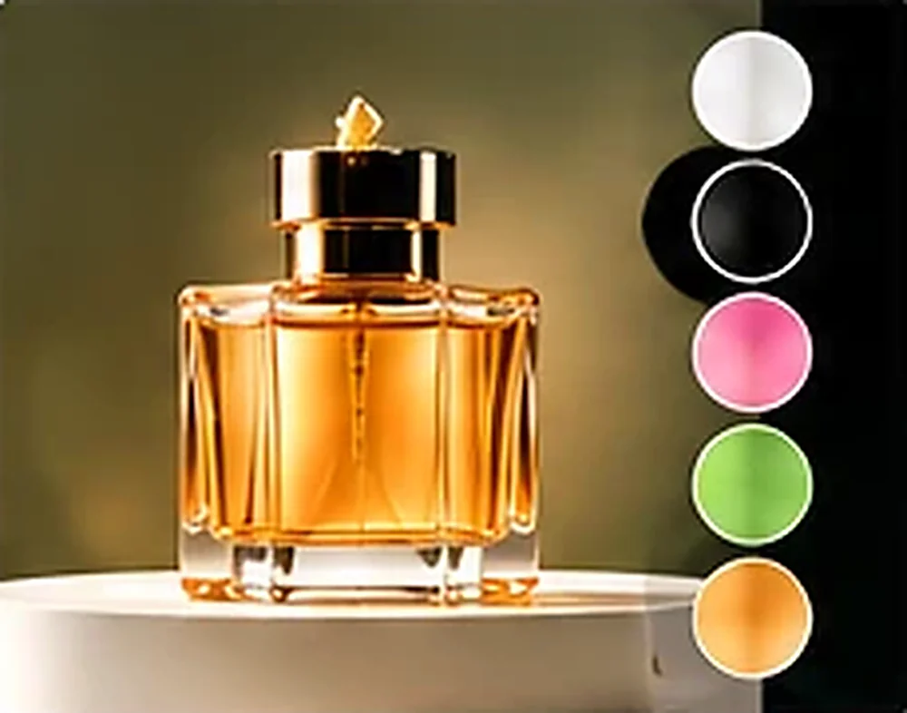
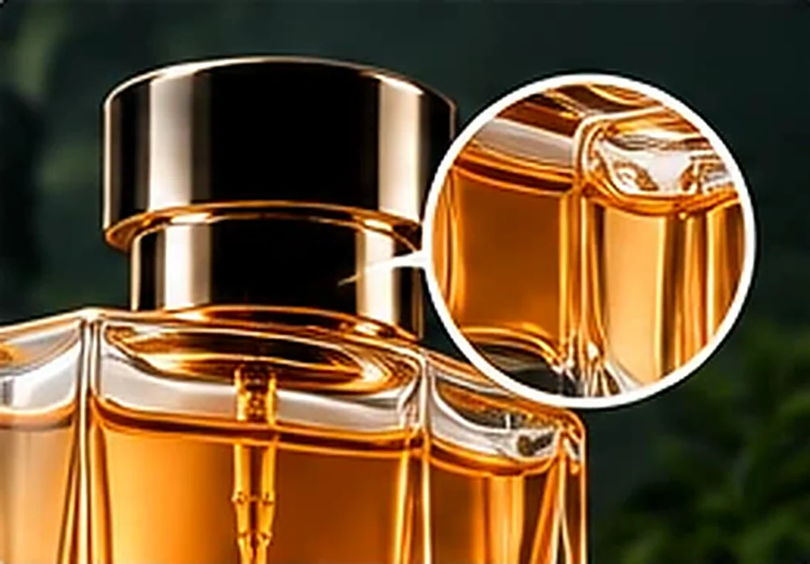
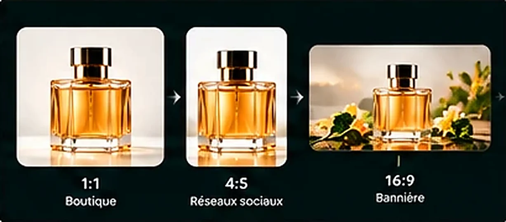
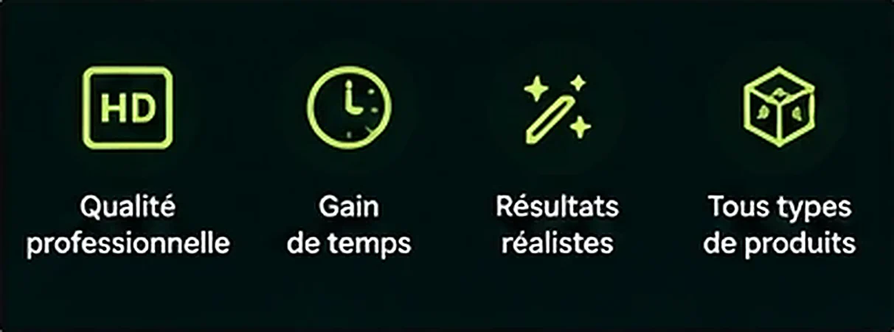
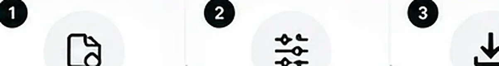
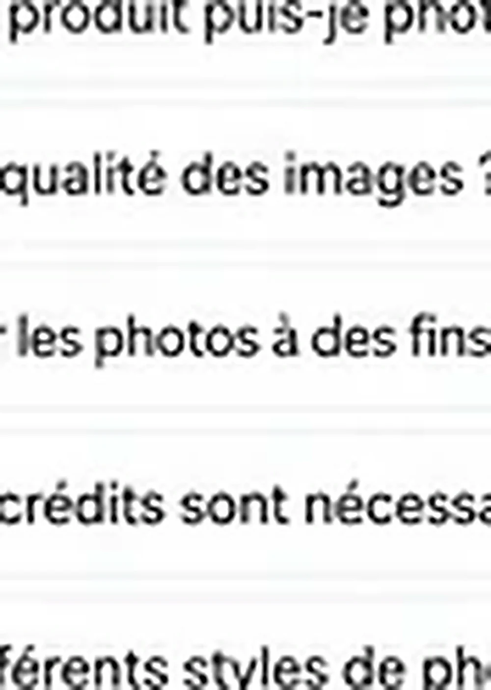
من خلفية الاستوديو إلى مشاهد الاستخدام اليومي، اختر الأنسب لمتجرك وإعلاناتك واطلب توجيهاً إضافياً بنص إن أردت.
من الصورة إلى النتيجة في دقائق.
افتح الصفحة وحدّد صورة المنتج في المحرّر.
حتى ثلاثة مشاهد وتوجيه إضافي اختياري.
توافق على الاستهلاك ثم تختار أفضل نتيجة وتطبّقها.
بعضها للتصوير التجاري وبعضها لمشاهد الاستخدام اليومي.
تحتاج مفتاح Alyssum API (تُطلب موافقتك قبل كل تنفيذ)
إجابات سريعة عن أكثر ما يُسأل.
حتى ثلاثة مشاهد في جلسة واحدة بموافقة واحدة.
تحتاج مفتاح Alyssum API، وتؤكّد الاستهلاك قبل التنفيذ.
تُرسل صورة المنتج مرجعاً ويُطلب الحفاظ عليه، وتتفاوت الدقة بحسب الصورة، فراجع الناتج قبل الاعتماد.
نعم: أداة «عرض 360°» تُنشئ 6 أو 8 أو 12 زاوية من صورة واحدة ثم يدوّرها الزائر بالسحب. قد تختلف الزاوية قليلاً بين إطار وآخر فراجعها.
تُظهر اليدين فقط بلباس محتشم وبلا وجه.
لا، يكفي هاتف أو صور منتجاتك الموجودة، ثم تُصوَّر في مشاهد جديدة. الصور التوليدية قد تغيّر تفاصيل دقيقة في العبوة، فراجعها قبل النشر ولا تعدّها بديلاً مضموناً عن التصوير الحقيقي لكل حالة.
لا، تُحفظ في مكتبتك أو تُنزَّل بالمقاسات التي تحتاجها كل منصة، ثم تنشرها حيث تبيع.
«تصوير المنتج» جلسة تصوير احترافية بخيارات إضاءة وخلفيات ومشاهد استخدام تختارها، أما «المشهد» فيضع المنتج بنقرة في مشهد أسلوب حياة مناسب. الصور التوليدية قد تغيّر تفاصيل دقيقة فراجعها قبل النشر التجاري.
نعم: يصلك تنبيه تلقائي في لوحة التحكم (وإشعار المتصفح إن سمحت به) عندما يقترب رصيد Alyssum API من النفاد، وتنبيه آخر عند نفاده. لا تُعرض لك أي أرقام استهلاك، وتتوقف الأدوات التي تستهلك الرصيد وحدها عند النفاد بينما تبقى بقية الأدوات تعمل.